PCB 印刷電路板
瑕疵自動化檢測系統
差異比對法（XOR）定位 ＋ YOLOv8 深度學習種類辨識
1. 專題概述
本專題目標為建立一套針對 PCB 印刷電路板 的自動化瑕疵檢測系統，能夠同時完成兩項核心任務： 瑕疵位置定位 與 瑕疵種類辨識。
採用差異比對法（absdiff）搭配形態學處理，利用與 Golden Sample（標準板）的畫素差異，精準找出瑕疵的空間位置。此方法計算輕量、定位準確。
採用 YOLOv8 物件偵測模型，在整張 PCB 圖像上直接進行多類別瑕疵辨識，輸出每個瑕疵的種類標籤與信心值。
2. 檢測物件
本系統針對單層 PCB 板面進行瑕疵檢測，共涵蓋 6 種工業常見瑕疵類型：
3. 系統架構
整體系統分為兩條平行處理線，最後合併輸出結果：
結果圖標注顏色說明
4. 資料集說明
使用 Kaggle 公開資料集 PCB Defects（akhatova），包含工業 AOI 系統拍攝的 PCB 高解析度影像。
📁 資料夾結構
├── Annotations/ ← Pascal VOC XML
│ ├── Missing_hole/
│ ├── Mouse_bite/
│ ├── Open_circuit/
│ ├── Short/
│ ├── Spur/
│ └── Spurious_copper/
├── images/ ← 瑕疵影像
│ └── (同上 6 個子資料夾)
└── PCB_USED/ ← Golden Sample
└── 01.JPG ~ 12.JPG
📊 資料集統計
.txt 格式才能訓練。
Golden Sample（標準板）
PCB_USED 內存放 10 張不同型號的無瑕疵標準板，程式根據測試圖檔名前綴（如 01_）自動對應正確標準板：
5. 影像預處理（差異比對法）
傳統機器視覺的核心步驟：將測試圖與 Golden Sample 做像素級比對，透過一連串影像處理操作提取出真實瑕疵位置。
對 Golden Sample 與測試圖各自套用 5×5 高斯核，消除拍攝雜訊，避免細微光線差異被誤認為瑕疵。
對兩張模糊後的灰階圖做絕對差值運算，只有存在差異的區域會產生非零像素，瑕疵位置呈現為亮白色區域。
使用 Otsu 算法自動計算最佳閾值，將差異圖二值化為黑白遮罩（mask），無需手動調整門檻值即可適應不同 PCB 板型。
先做 Opening（侵蝕→膨脹）去除細碎雜訊，再做 Closing（膨脹→侵蝕）填補瑕疵區域內的空洞，使候選框更完整連通。使用 5×5 kernel，各迭代 2 次。
掃描二值遮罩中的連通區域，提取每個候選瑕疵的 bounding box（x, y, w, h）與面積。面積 < 100 像素的區域視為雜訊直接過濾。
核心程式碼
def get_diff_mask(golden_blur, test_blur):
# Step 2: 差異影像
diff = cv2.absdiff(golden_blur, test_blur)
# Step 3: Otsu 自適應閾值
_, thresh = cv2.threshold(diff, 0, 255,
cv2.THRESH_BINARY + cv2.THRESH_OTSU)
# Step 4: 形態學去噪
k = np.ones((5, 5), np.uint8)
opened = cv2.morphologyEx(thresh, cv2.MORPH_OPEN, k, iterations=2)
closed = cv2.morphologyEx(opened, cv2.MORPH_CLOSE, k, iterations=2)
return closed
def get_xor_boxes(mask):
# Step 5: 連通區域分析，面積過濾
num_labels, _, stats, _ = cv2.connectedComponentsWithStats(
mask, connectivity=8)
boxes = []
for i in range(1, num_labels):
if stats[i, cv2.CC_STAT_AREA] >= 100: # 面積門檻
boxes.append((stats[i, cv2.CC_STAT_LEFT],
stats[i, cv2.CC_STAT_TOP],
stats[i, cv2.CC_STAT_WIDTH],
stats[i, cv2.CC_STAT_HEIGHT]))
return boxes
6. YOLOv8 模型訓練
訓練前置：XML → YOLO 格式轉換
原始標注為 Pascal VOC XML 格式，需轉換為 YOLOv8 所需的 .txt 格式。每行代表一個瑕疵物件，使用相對座標（0~1 範圍）。
資料切分
訓練設定
| 模型 | YOLOv8n（Nano） |
| 輸入尺寸 | 640 × 640 |
| Batch size | 16 |
| Epochs | 72（Early Stop） |
| Patience | 20 epochs |
| 資料增強 | Mosaic, Mixup, Flip |
訓練結果指標
7. 推論整合策略
XOR 與 YOLO 各有優勢，透過以下匹配邏輯將兩者結果合併：
def match_xor_to_yolo(xor_boxes, yolo_detections):
"""
對每個 XOR 候選框，找最匹配的 YOLO 偵測框：
條件：IoU >= 0.05 OR 中心點距離 <= 60px
"""
for xb in xor_boxes:
best = max(yolo_detections, key=lambda yb:
iou(xb, yb) # 優先比 IoU
if iou(xb, yb) >= 0.05
else (1 - center_dist(xb,yb)/60 # 次選距離
if center_dist(xb, yb) <= 60 else -1))
if matched: → 綠框：採用 XOR 位置 + YOLO 種類
else: → 紅框：XOR 有框，種類標 detected
未匹配 YOLO 框 → 橘框：輕微瑕疵（純 YOLO）
PCB 瑕疵尺寸極小（通常只有數十像素），兩個框只要稍有偏移 IoU 就會非常低甚至為 0。純粹依賴 IoU 會導致大量漏匹配。中心點距離 ≤ 60px 作為備用條件可有效補足這個問題。
8. 檢測結果展示
以下展示各 PCB 板型的代表性檢測結果，結果圖依板號分類儲存於 PCB_RESULT/RESULT_xx/：
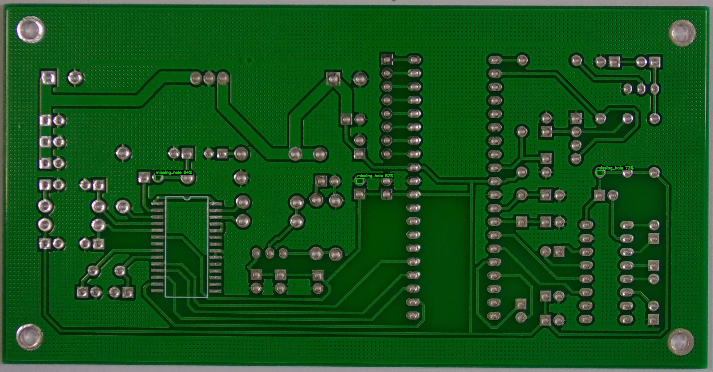
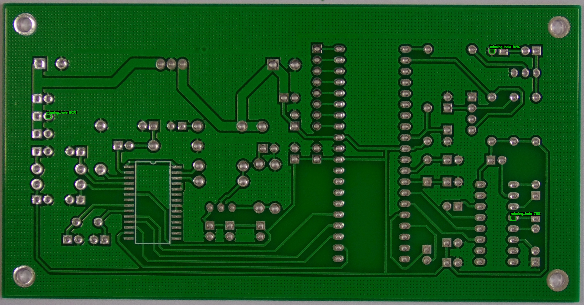
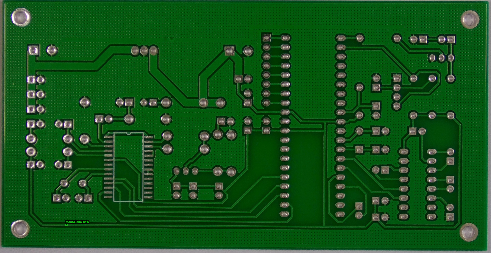
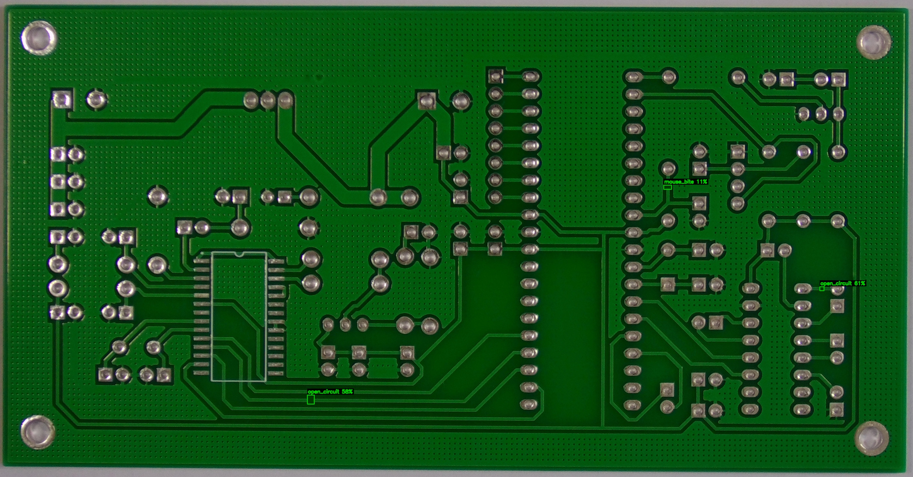
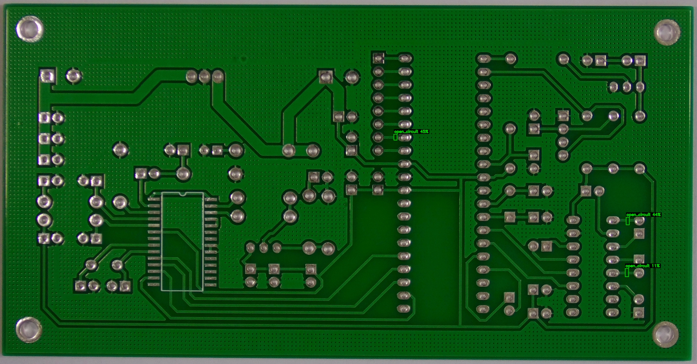
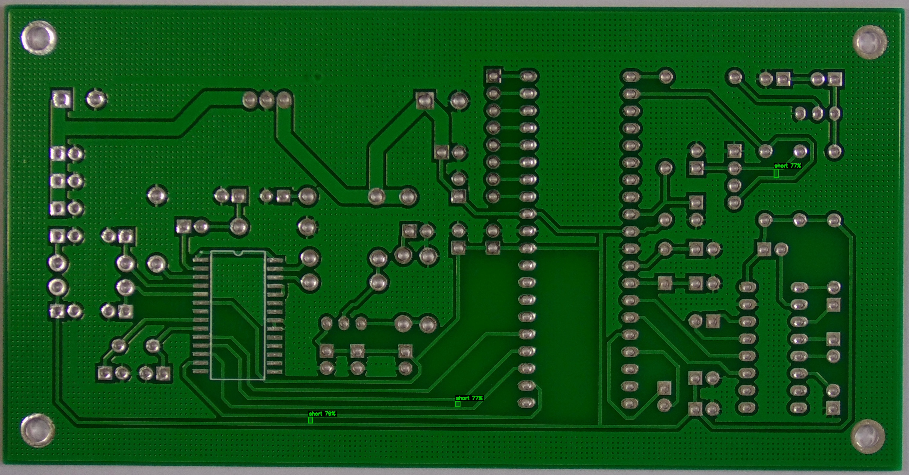
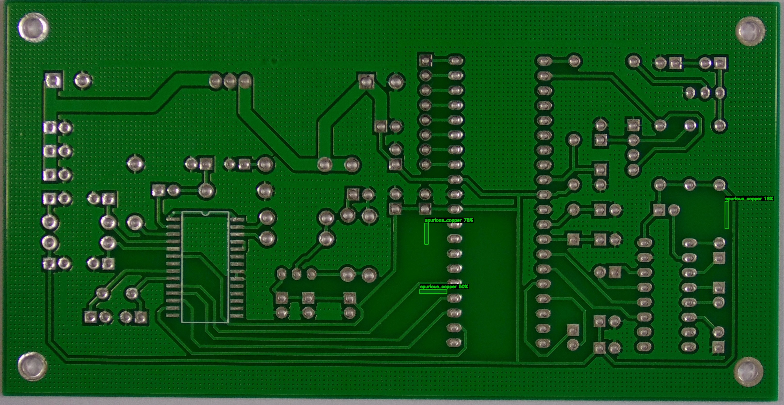
Golden Sample 標準板一覽

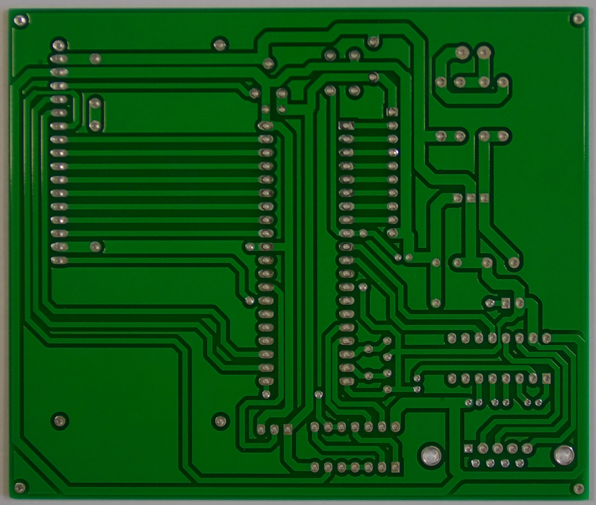

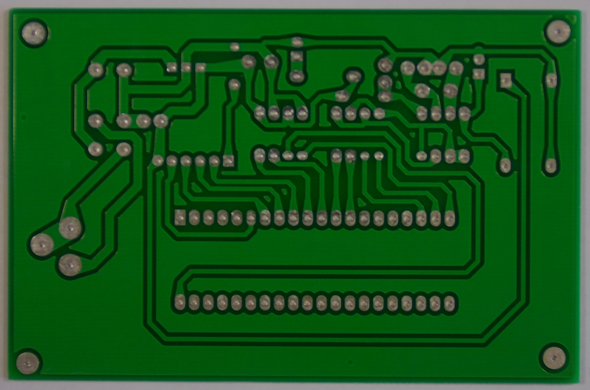
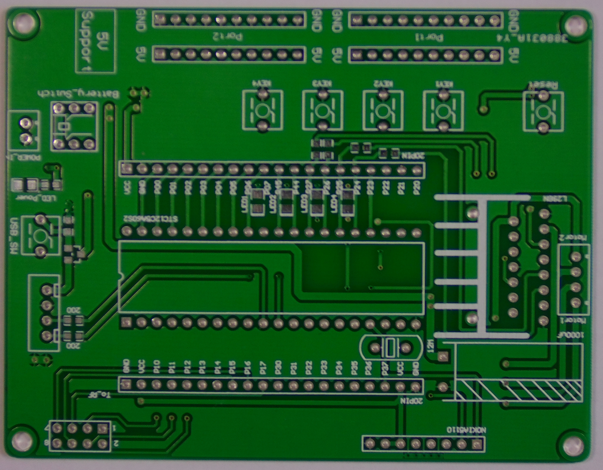
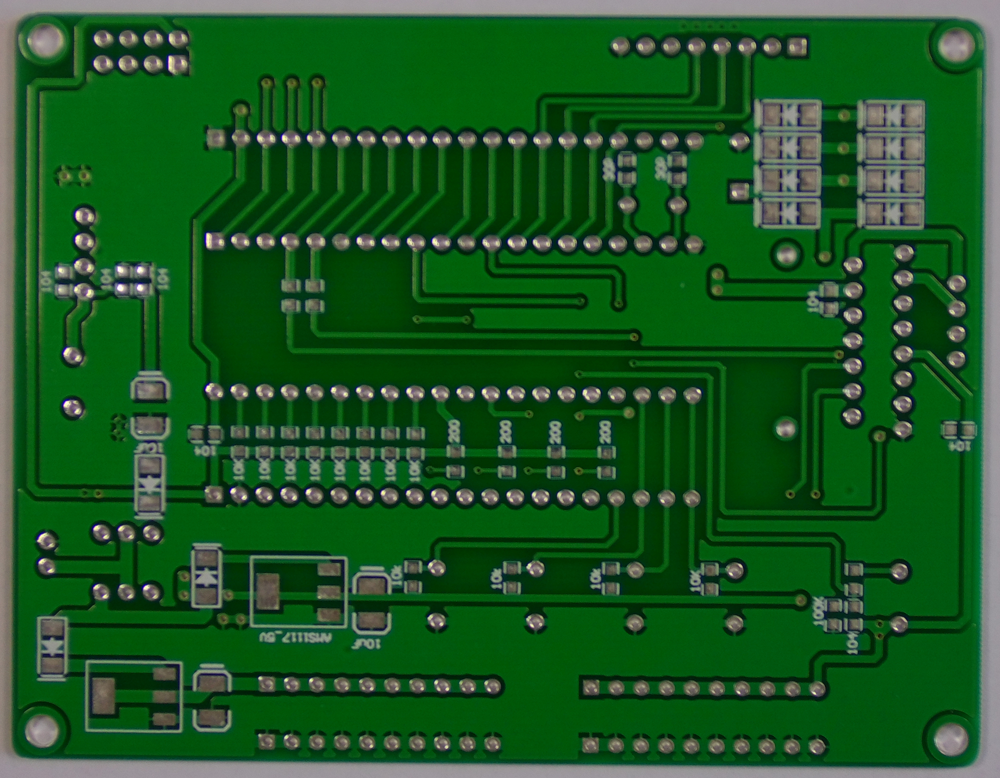
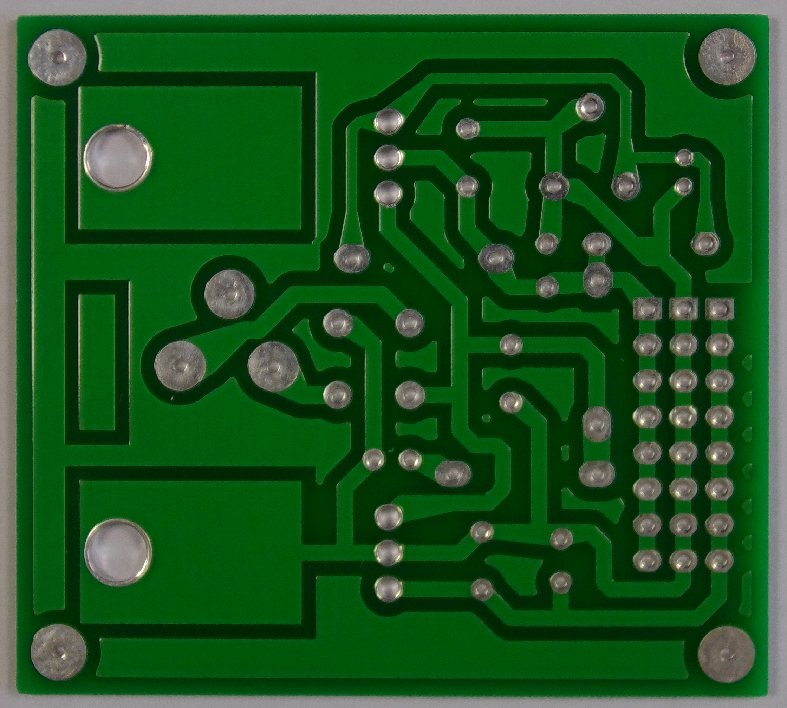
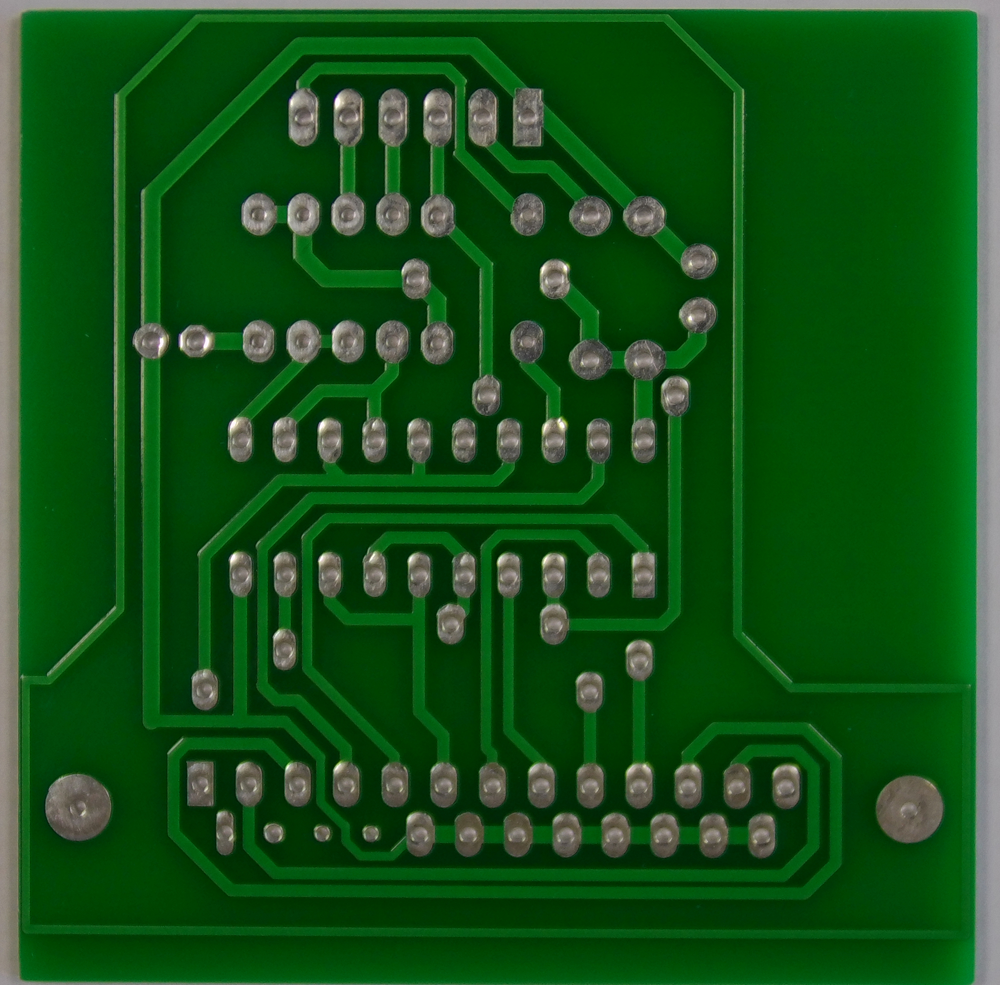

9. 專題應用
本系統的技術架構可延伸應用於以下工業場景：
替代人工目視，在 SMT 生產線上即時對每片 PCB 進行瑕疵篩選，提升良率與生產效率。
透過 CSV 報告統計各類瑕疵的分佈與頻率，回饋製程工程師進行蝕刻、曝光等製程的參數優化。
系統支援多張 Golden Sample 並根據板號自動切換，可在同一條產線上檢測不同型號的 PCB。
新的瑕疵類型只需補充標注資料重新訓練 YOLOv8，不需修改 XOR 定位流程，維護成本低。
10. 課程對應
本專題涵蓋機器視覺檢測課程中的以下核心知識點：
傳統影像處理
- ✦ 濾波器：高斯模糊（Gaussian Blur）去除拍攝雜訊
- ✦ 閾值化：Otsu 自適應二值化，無需手動調參
- ✦ 形態學操作：Opening / Closing 的原理與應用
- ✦ 連通區域分析：ConnectedComponents 提取候選區域
- ✦ 差異比對法：absdiff 作為機器視覺檢測的核心方法
深度學習與整合
- ✦ 物件偵測：YOLO 架構原理與 Anchor-Free 偵測
- ✦ 資料標注：Pascal VOC → YOLO 格式轉換
- ✦ 模型評估：mAP、Precision、Recall 指標解讀
- ✦ IoU 計算：Intersection over Union 框比對原理
- ✦ 系統整合：傳統方法與深度學習的混合架構設計
11. 心得與貢獻
12. 參考資料
-
📦 Kaggle — PCB Defects Dataset (akhatova)
本專題使用的主要資料集，1386 張 PCB 影像，6 種瑕疵類別，Pascal VOC XML 標注格式。
-
🧠 Ultralytics — YOLOv8 Official Documentation
YOLOv8 模型架構、訓練 API、超參數設定與評估指標說明。
-
🔬 GitHub — DeepPCB Dataset
PCB 瑕疵檢測相關研究，差異比對法的工業實作參考。
-
📷 OpenCV 4.x Documentation
影像預處理相關函式：absdiff、threshold、morphologyEx、connectedComponentsWithStats。
-
📚 本站機器視覺檢測講義
課程講義中的影像濾波、形態學、閾值化等基礎理論章節。